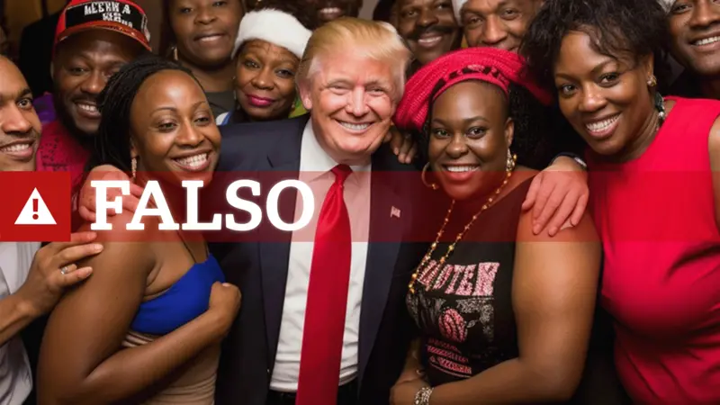
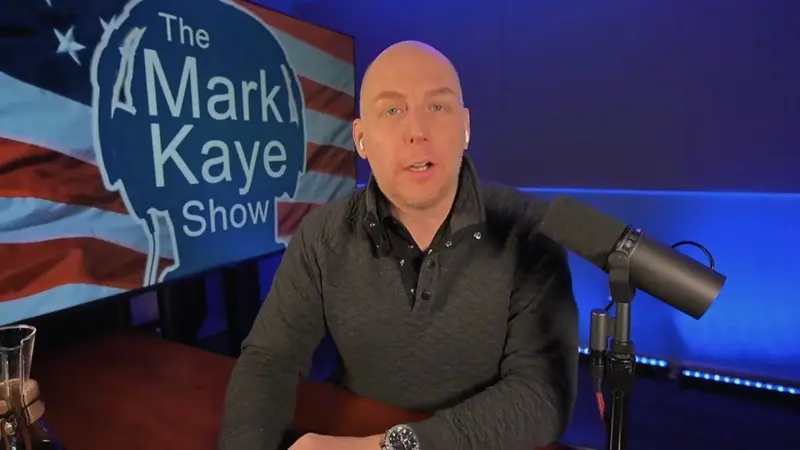
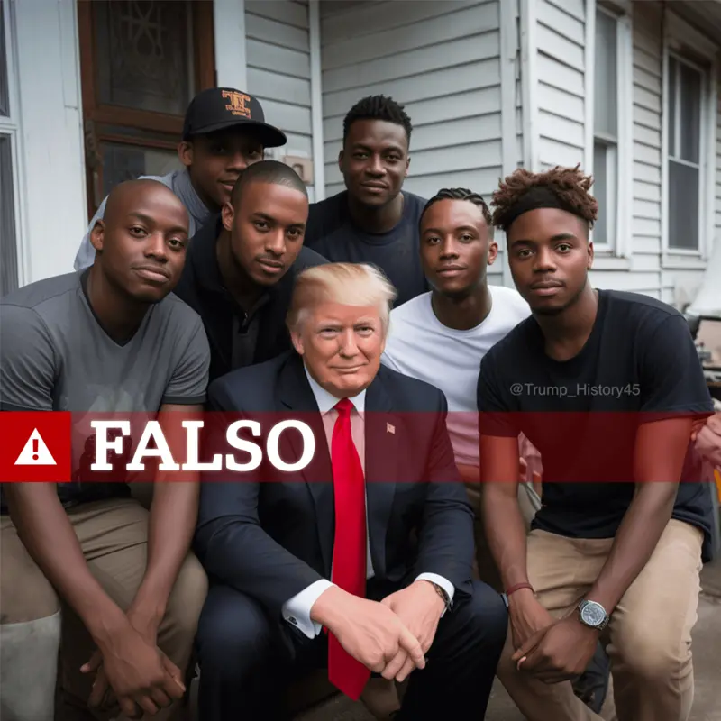

otras noticias
- Cómo un viaje a Noruega me hizo ver que estaba equivocado y que la Tierra no es plana
- La princesa Kate pide disculpas por la "confusión" que causó su foto retirada por las agencias de noticias por inconsistencias
- “Me arrepiento de haber publicado en línea que yo era Madeleine McCann”
- El Yimeilun, la estrategia con la que China busca influir en las elecciones de Taiwán al sembrar dudas sobre su alianza con EE.UU.
- Las afirmaciones falsas y engañosas amplificadas por Elon Musk en Twitter
- Donald Trump: cómo detectar imágenes creadas por inteligencia artificial como las fotos falsas del arresto del expresidente
- Los sobrevivientes de ataques terroristas que son acusados de fingir por teóricos de la conspiración
- Quiénes son los "Ciudadanos del Reich", el grupo asociado con los golpistas arrestados en Alemania
Las imágenes falsas creadas con IA para intentar atraer el apoyo de los votantes negros hacia Trump
Los partidarios del expresidente estadounidense Donald Trump han estado creando y compartiendo imágenes falsas de votantes negros generadas por inteligencia artificial (IA) para alentar a los afroamericanos a votar por los republicanos.
BBC Panorama descubrió decenas de deepfakes que mostraban a personas negras apoyando al mandatario, quien aspira a regresar a la Casa Blanca en los comicios de finales de este año.
Trump ha cortejado abiertamente a los votantes negros, que fueron clave para la victoria electoral de Joe Biden en 2020.
Pero no hay evidencia que vincule directamente estas imágenes con la campaña de Trump.
El cofundador de Black Voters Matter, un grupo que anima a los negros a votar, dijo que las imágenes manipuladas estaban impulsando una "narrativa estratégica" diseñada para mostrar a Trump como popular en la comunidad negra.
Un creador de una de las imágenes le dijo a la BBC: "No afirmo que sea verdadera".
Las imágenes falsas de partidarios negros de Trump, generadas por IA, son una de las tendencias de desinformación emergentes de cara a las elecciones presidenciales estadounidenses de noviembre.
A diferencia de 2016, cuando hubo evidencia de campañas de influencia extranjera, las imágenes generadas por IA encontradas por la BBC parecen haber sido creadas y compartidas por los propios votantes estadounidenses.
Uno de ellos fue Mark Kaye y su equipo en un programa de radio conservador en Florida.
Crearon una imagen de Trump sonriendo con sus brazos alrededor de un grupo de mujeres negras en una fiesta y la compartieron en Facebook, donde Kaye tiene más de un millón de seguidores.
Al principio parece real, pero si se mira más de cerca, la piel de todos es demasiado brillante y les faltan dedos en las manos, algunos signos reveladores de imágenes creadas por IA.
"No soy un fotoperiodista", me dice Kaye desde su estudio de radio.
"No estoy ahí afuera tomando fotografías de lo que realmente está sucediendo. Soy un narrador de historias".
Kaye había publicado un artículo sobre votantes negros que apoyaban a Trump y le adjuntó esta imagen, dando la impresión de que todas estas personas apoyan la candidatura del expresidente a la Casa Blanca.
En los comentarios en Facebook, varios usuarios al parecer creyeron que la imagen de IA era real.
"No estoy afirmando que sea cierta. No estoy diciendo: 'Oye, mira, Donald Trump estuvo en esta fiesta con todos estos votantes afroamericanos. ¡Mira cuánto lo aman!'", dijo.
"Si alguien vota de una manera u otra por una foto que ve en una página de Facebook, es un problema de esa persona, no de la publicación en sí".
Otra imagen de IA ampliamente vista que encontró la investigación de la BBC muestra a Trump posando con votantes negros en un porche.
Originalmente había sido publicada por una cuenta satírica que genera imágenes del expresidente, pero solo obtuvo una amplia atención cuando se volvió a publicar con una nueva leyenda que afirmaba falsamente que Trump había detenido su caravana para encontrarse con estas personas.
Localizamos a la persona detrás de la cuenta llamada Shaggy, que es un partidario comprometido de Trump que vive en Michigan.
"[Mis publicaciones] han atraído miles de seguidores cristianos maravillosos y de buen corazón", dijo en mensajes enviados a la BBC en las redes sociales.
Cuando intenté interrogarlo sobre la imagen generada por IA, me bloqueó. Su publicación ha tenido más de 1,3 millones de visitas, según X.
Algunos usuarios lo denunciaron, pero otros parecían haber creído que la imagen era real.
No encontré imágenes de Joe Biden manipuladas de manera similar con votantes de un grupo demográfico en particular.